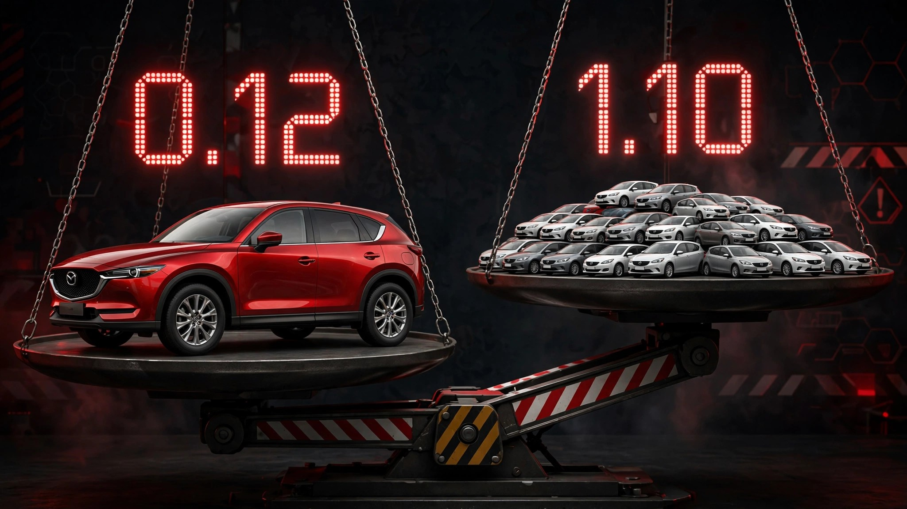

The Mazda CX-5 Has a Death Rate of 0.12. The National Average Is 1.10. Do the Math.

NHTSA just posted the safest first quarter in over a decade. 0.99 deaths per 100 million vehicle miles traveled for January through March 2026, down 4.3 percent from the same period last year, even as Americans drove 11 billion more miles.[1] Congratulations. At this rate, we will still bury roughly 38,000 people this year in vehicle crashes.
Meanwhile, a $29,990 crossover from Hiroshima has been quietly posting a fatality rate that makes the national number look barbaric. The Mazda CX-5's FARS death rate sits at 0.12 per 100 million VMT. Not 1.2. Not 0.12 with a bunch of asterisks. Just 0.12.[2] That is one-ninth the 2025 national rate of 1.10.[3] The Toyota RAV4 clocks 0.19. Honda's CR-V, 0.53. Chevrolet's Equinox, 0.36. These are not concept vehicles or government prototypes. You can drive one off a lot this afternoon.
Run the counterfactual and it stops being an academic exercise. If every vehicle on American roads performed at the CX-5's rate, annual traffic deaths would plummet from 38,000 to roughly 4,100. That is 33,900 people who did not have to die. Not because we lacked the technology, but because the fleet still includes the Chevrolet Impala at 5.0, the Ford Mustang at 6.02, and the Hyundai Veloster at 8.54 deaths per 100 million VMT. Per mile driven, the CX-5 is 71 times safer than the Veloster. They share the same roads, the same speed limits, sometimes the same household.
IIHS has noticed. Mazda earned Top Safety Pick+ for the CX-5 every year it has been eligible, and Consumer Reports declared Mazda the safest overall brand for 2026.[4] Its hood sits low enough that the pedestrian crash test returns a Good rating instead of the Marginal or Poor results plaguing most trucks and large SUVs. Standard AEB with pedestrian detection comes on every trim.
An obvious objection: people who buy CX-5s are not the same people who buy Mustangs. Suburban parents with good insurance and no speeding tickets are not demographically identical to 22-year-olds in base-model sports cars. Fair. But the IIHS crash tests remove driver behavior from the equation entirely, and the CX-5 passes all of them at the highest level. Structural advantage is real, independent of who sits behind the wheel.
A harder objection: fleet uniformity is fantasy. Nobody is going to legislate CX-5 adoption, and consumer demand for pickups and sports cars is not going away. Granted. But the gap between what we drive and what we could drive is not an engineering problem or even a cost problem. CX-5 starts below $30,000. Equinox starts at $30,500. RAV4, $31,300. Safety is available at the median new-car price. We are choosing not to buy it. Or more precisely, we are choosing features that actively work against it: taller hoods, heavier curb weights, blindspot-creating A-pillars, and performance tunes that reward speed over survival.
If you are shopping for a vehicle right now, this is the only page you need. Look at the FARS rate column. If the number is above 2.0, you are buying a vehicle that kills its occupants at double the national average. If it is below 0.5, the odds are profoundly in your favor. CX-5, RAV4, CR-V, Equinox, Rogue, and Forester all live below 0.5. They cost roughly the same as the sedans they replaced. Sedan-to-crossover migration that crushed the Impala and Malibu is the single largest contributor to the declining national death rate, and it happened not because NHTSA mandated it but because consumers wanted more cargo space.
America backed into its safest decade by accident. What remains is whether we are willing to finish the job on purpose.
Sources & References
- NHTSA, Early Estimate of Motor Vehicle Traffic Fatalities and Fatality Rate for the First Quarter of 2026 (DOT HS 813 833), July 2026. nhtsa.gov
- NHTSA, Fatality Analysis Reporting System (FARS), 2014–2023. Death rates estimated per 100M VMT using FARS crash counts, estimated fleet size, and NHTS annual mileage. nhtsa.gov
- NHTSA, Early Estimates of Motor Vehicle Traffic Fatalities and Fatality Rate in 2025 (DOT HS 813 800). Full-year 2025 rate: 1.10 per 100M VMT, lowest since 2019. nhtsa.gov
- IIHS, 2026 Top Safety Pick+ Winners; Consumer Reports, Safest New Cars of 2026, July 2026. iihs.org
Limitations
FARS estimated_rate uses VMT estimates derived from NHTS survey data and industry fleet numbers, not actual odometer readings; uncertainty is approximately ±15% for low-volume models. Vehicle age composition differs across models: the CX-5 fleet skews newer than the Impala fleet, which inflates the Impala's rate. The counterfactual calculation assumes uniform driver behavior, which overstates the achievable reduction. Pedestrian, cyclist, and motorcyclist fatalities depend on vehicle exterior design, road infrastructure, and speed limits in addition to occupant protection.
Strongest Counterargument
The CX-5's low death rate partly reflects its buyer demographic. Middle-income families in suburban zip codes drive fewer late-night miles, carry lower DUI rates, and accumulate fewer aggressive-driving citations than the median Mustang or Veloster buyer. Fully controlling for driver behavior would narrow the gap between these vehicles. However, the IIHS crashworthiness tests evaluate structural performance with no driver in the equation, and the CX-5 earns the highest possible rating in every one of them. Demographics explain part of the gap. Engineering explains the rest.